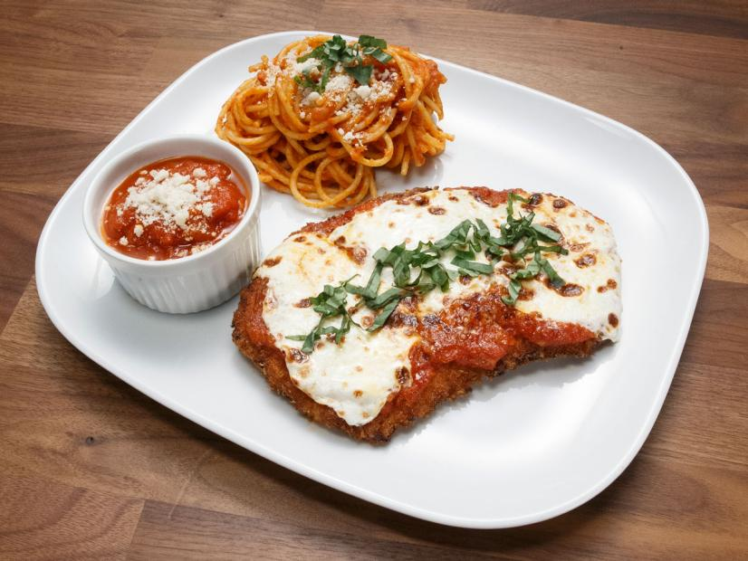

Gluten Free Veal Parmigiana Recipe

Description
If you say you're making a really good gluten-free Veal Parmesan or Chicken Parmesan for lunch or dinner, and if you say I am invited, then we are very likely going to be friends, for my heart holds a deep and abiding love those two dishes. Here's a quick, easy and elegant version. I like to make it with veal, but chicken is also delicious.
Ingredients
- 6 thin veal cutlets, about 2 1/2 ounces each
- ¾ cup of potato flour, rice flour, cornstarch, or general purpose gluten-free flour
- ¾ cup crushed Rice Chex or gluten-free breadcrumbs
- ½ cup grated Romano cheese
- 1 teaspoon salt
- 1 teaspoon black pepper
- ½ teaspoon cayenne pepper
- 1 teaspoon garlic powder
- 1 teaspoon onion powder
- 1 teaspoon paprika
- 1 teaspoon dried oregano
- 1 teaspoon dried thyme
- 1 large egg, lightly beaten
- 2 cups your favorite easy tomato sauce--canned. jarred, whatever might be in the freezer, etc.
- ⅓ cup olive oil
- 4 ounces mozzarella cheese, preferably fresh, cut 6 1/4-inch-thick slices
- Salt and freshly ground pepper to taste
Steps
- Combine breadcrumbs and grated Parmesan in a shallow bowl.
- Combine spices in a bowl and mix.
- Heat your oven's broiler.
- On the stove, warm the tomato sauce on a rear burner.
- On another burner, heat ½-inch of oil in large cast iron skillet over medium heat. Don't let oil get smoky.
- Season both sides of the cutlets with the spice mix of salt, pepper, garlic powder, onion powder, thyme, oregano, paprika, and cayenne.
- Dredge cutlets in gluten-free flour of choice.
- Then dip cutlets in the beaten egg, then dredge in breadcrumb and cheese mixture, turning to coat both sides. Place 3 cutlets on a plate.
- Place 3 cutlets in skillet; cook until golden, 1 to 2 minutes on each side.
- Using a spatula, transfer browned cutlets to a 10x15 inch baking pan.
- Top off oil in the skillet. Cook the remaining cutlets.
- Place remaining cutlets in baking pan.
- Top each cutlet with a slice of mozzarella.